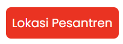

Lokasi
Pondok Pesantren Al Munawwir terletak di l. KH. Ali Maksum, Krapyak, Panggungharjo, Sewon, Krapyak Kulon, Panggungharjo, Kec. Sewon, Kabupaten Bantul, Daerah Istimewa Yogyakarta. Adapun peta Administrasi Kabupaten Bantul terlampir demikian:
Pondok Pesantren Al-Munawwir
1. Gunakan tombol zoom in , zoom out , dan reset bearing to north untuk mengatur posisi peta.
2. Titik biru bertuliskan huruf "A" merupakan titik lokasi Anda.
3. Klik tombol  untuk menampilkan lokasi Pondok Pesantren Al-Munawwir.
4. Klik salah satu bangunan sebagai tujuan destinasi.
5. Rute ditampilkan sebagai garis biru pada peta.
Pondok Pesantren Al-Munawwir merupakan salah satu pesantren tertua dan terkemuka di Indonesia yang berlokasi di Krapyak, Yogyakarta. Dikenal dengan sistem pengajaran klasik dan modern yang seimbang, pesantren ini menjadi pusat pembelajaran ilmu agama, tahfidz Al-Qur’an, dan pengembangan karakter santri.
Pondok Pesantren Al Munawwir terletak di l. KH. Ali Maksum, Krapyak, Panggungharjo, Sewon, Krapyak Kulon, Panggungharjo, Kec. Sewon, Kabupaten Bantul, Daerah Istimewa Yogyakarta. Adapun peta Administrasi Kabupaten Bantul terlampir demikian:
Salah satu contoh peta dinamis yaitu Peta Kepadatan Penduduk. Kepadatan penduduk geografis menunjukkan jumlah penduduk pada suatu daerah setiap kilometer persegi. Kepadatan penduduk geografis menunjukkan penyebaran penduduk dan tingkat kepadatan penduduk di suatu daerah. Daerah yang mempunyai kepadatan penduduk geografis tinggi terletak di Kecamatan Banguntapan, Sewon dan Kasihan. Sedangkan kepadatan penduduk geografis rendah terletak di Kecamatan Dlingo, Pajangan, dan Pleret. Kabupaten Bantul pada Semester II tahun 2019 memiliki penduduk sebanyak 949.325 jiwa dengan rata-rata setiap km2 nya didiami oleh 1.872,99 jiwa.